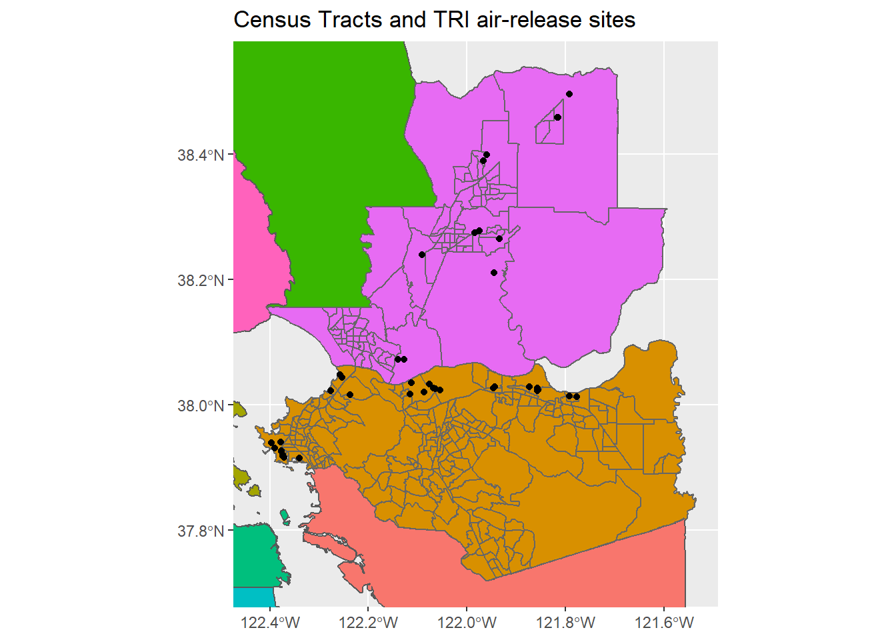
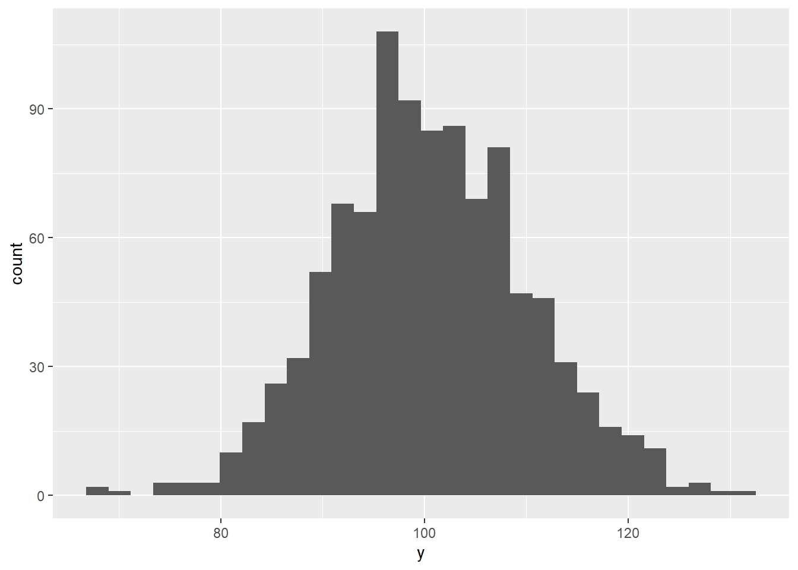
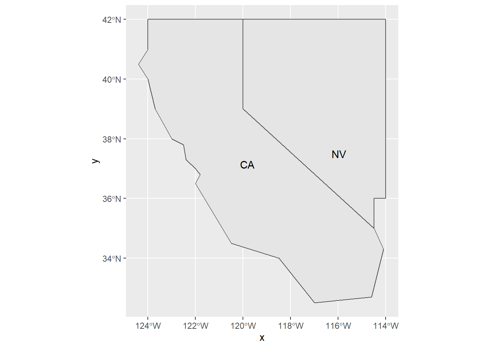
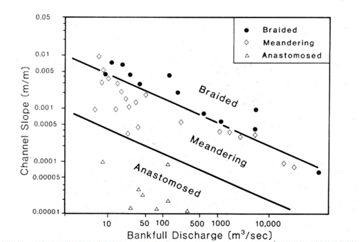
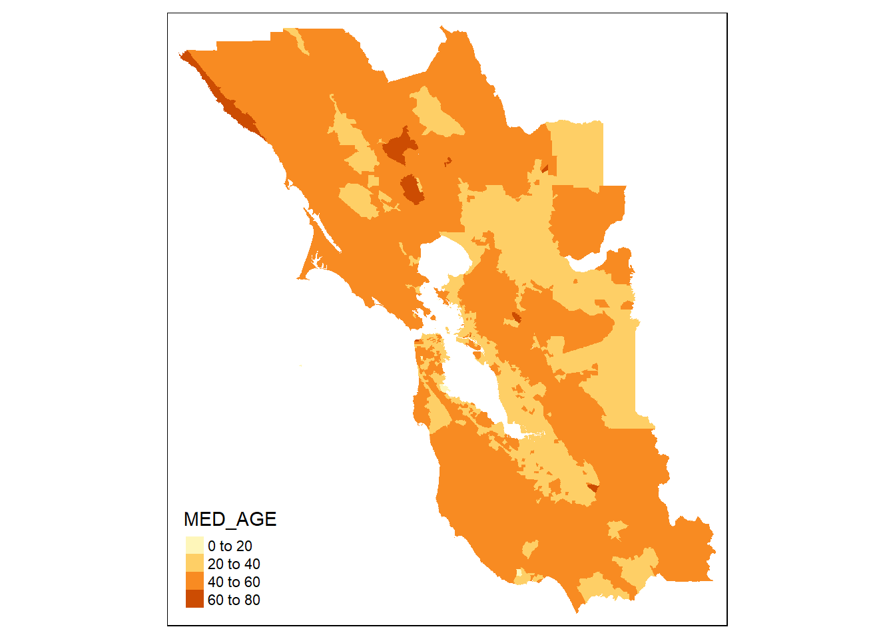
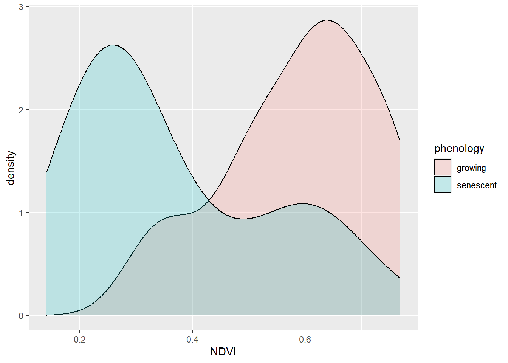

7 Statistics and Modeling

7.1 Goals of statistical analysis
To frame how we might approach statistical analysis and modeling, there are various goals that are commonly involved:
- To understand our data
- nature of our data, through summary statistics and various graphics like histograms
- spatial statistical analysis
- time series analysis
- To group or classify things based on their properties
- using factors to define groups, and deriving grouped summaries
- comparing observed vs expected counts or probabilities
- To understand how variables relate to one another
- or maybe even explain variations in other variables, through correlation analysis
- To model behavior and maybe predict it
- various linear models
- To confirm our observations from exploration (field/lab/vis)
- inferential statistics e.g. difference of means tests, ANOVA, X^2
- To have the confidence to draw conclusions, make informed decisions
- To help communicate our work
These goals can be seen in the context of a typical research paper or thesis outline in environmental science:
- Introduction
- Literature Review
- Methodology
- Results
- field, lab, geospatial data
- Analysis
- statistical analysis
- qualitative analysis
- visualization
- Discussion
- making sense of analysis
- possibly recursive, with visualization
- Conclusion
- conclusion about what the above shows
- new questions for further research
- possible policy recommendation
The scope and theory of statistical analysis and models is extensive, and there are many good books on the subject that employ the R language. This chapter is a short review of some of these methods and how they apply to environmental data science.
7.2 Summary Statistics
Summary statistics such as mean, standard deviation, variance, minimum, maximum, and range are derived in quite a few
R functions, commonly as a parameter or a sub-function (see mutate). A an overall simple statistical summary is very easy to do in base R:
summary(tidy_eucoak)## site site # tree Date month rain_mm rain_subcanopy
## Length:180 Min. :1.000 Length:180 Min. :2006-11-08 Length:180 Min. : 1.00 Min. : 1.00
## Class :character 1st Qu.:2.000 Class :character 1st Qu.:2006-12-07 Class :character 1st Qu.:16.00 1st Qu.:16.00
## Mode :character Median :4.000 Mode :character Median :2007-01-30 Mode :character Median :28.50 Median :30.00
## Mean :4.422 Mean :2007-01-29 Mean :37.99 Mean :34.84
## 3rd Qu.:6.000 3rd Qu.:2007-03-22 3rd Qu.:63.25 3rd Qu.:50.00
## Max. :8.000 Max. :2007-05-07 Max. :99.00 Max. :98.00
## NA's :36 NA's :4
## slope aspect runoff_L surface_tension runoff_rainfall_ratio
## Min. : 9.00 Min. :100.0 Min. : 0.000 Min. :28.51 Min. :0.00000
## 1st Qu.:12.00 1st Qu.:143.0 1st Qu.: 0.000 1st Qu.:37.40 1st Qu.:0.00000
## Median :24.00 Median :196.0 Median : 0.825 Median :62.60 Median :0.03347
## Mean :20.48 Mean :186.6 Mean : 2.244 Mean :55.73 Mean :0.05981
## 3rd Qu.:27.00 3rd Qu.:221.8 3rd Qu.: 3.200 3rd Qu.:72.75 3rd Qu.:0.08474
## Max. :32.00 Max. :296.0 Max. :16.000 Max. :72.75 Max. :0.42000
## NA's :8 NA's :44 NA's :87.2.1 Summarize by group: stratifying a summary
eucoakrainfallrunoffTDR %>%
group_by(site) %>%
summarize(
rain = mean(rain_mm, na.rm = TRUE),
rainSD = sd(rain_mm, na.rm = TRUE),
runoffL_oak = mean(runoffL_oak, na.rm = TRUE),
runoffL_euc = mean(runoffL_euc, na.rm = TRUE),
runoffL_oakMax = max(runoffL_oak, na.rm = TRUE),
runoffL_eucMax = max(runoffL_oak, na.rm = TRUE),
)## # A tibble: 8 x 7
## site rain rainSD runoffL_oak runoffL_euc runoffL_oakMax runoffL_eucMax
## <chr> <dbl> <dbl> <dbl> <dbl> <dbl> <dbl>
## 1 AB1 48.4 28.2 6.80 6.03 6.80 6.80
## 2 AB2 34.1 27.9 4.91 3.65 4.91 4.91
## 3 KM1 48 32.0 1.94 0.592 1.94 1.94
## 4 PR1 56.5 19.1 0.459 2.31 0.459 0.459
## 5 TP1 38.4 29.5 0.877 1.66 0.877 0.877
## 6 TP2 34.3 29.2 0.0955 1.53 0.0955 0.0955
## 7 TP3 32.1 28.4 0.381 0.815 0.381 0.381
## 8 TP4 32.5 28.2 0.231 2.83 0.231 0.2317.2.2 Boxplot for visualizing distributions by group
A Tukey boxplot is a good way to visualize distributions by group. In this soil CO_2 study of the Marble Mountains, some sites had much greater variance, and some sites tended to be low vs high:
soilCO2_97$SITE <- factor(soilCO2_97$SITE)
ggplot(data = soilCO2_97, mapping = aes(x = SITE, y = `CO2%`)) +
geom_boxplot()
7.2.3 Generating pseudorandom numbers
Functions commonly used in R books for quickly creating a lot of numbers to display are those that generate pseudorandom numbers. These are also useful in statistical methods that need a lot of these, such as in Monte Carlo simulation. The two most commonly used are:
runif()generates a vector ofnpseudorandom numbers ranging by default frommin=0tomax=1.rnorm()generates a vector ofnnormally distributed pseudorandom numbers with a defaultmean=0andsd=0.
To see both in action as x and y:
x <- as_tibble(runif(n=1000, min=10, max=20))
names(x) <- 'x'
ggplot(x, aes(x=x)) + geom_histogram()y <- as_tibble(rnorm(n=1000, mean=100, sd=10))
names(y) <- 'y'
ggplot(y, aes(x=y)) + geom_histogram()ggplot(y, aes(x=y)) + geom_density()xy <- bind_cols(x,y)
ggplot(xy, aes(x=x,y=y)) + geom_point()7.3 Statistical tests
Tests that compare our data to other data or look at relationships among variables are important statistical methods, and you should refer to statistical references to best understand how to apply the appropriate methods for your research.
7.3.1 Comparing samples and groupings
A common need in environmental research is to compare samples of a phenomenon or compare samples with an assumed standard population. The simplest application of this is the t-test, which can only involve comparing two samples or one sample with a population. Analysis of Variance extends this to allow for more than two groups, and can be seen as a linear model where the categorical grouping (as a factor in R) is one of the variables.
7.3.1.1 t.test and a non-parametric alternative, the Kruskal-Wallis Rank Sum test
XSptsPheno %>%
ggplot(aes(NDVI, fill=phenology)) +
geom_density(alpha=0.2)
Figure 7.1: NDVI by phenology
t.test(NDVI~phenology, data=XSptsPheno) ##
## Welch Two Sample t-test
##
## data: NDVI by phenology
## t = 5.4952, df = 52.03, p-value = 1.19e-06
## alternative hypothesis: true difference in means is not equal to 0
## 95 percent confidence interval:
## 0.1421785 0.3057412
## sample estimates:
## mean in group growing mean in group senescent
## 0.5901186 0.3661588While these data sets appear reasonably normal, the Shapiro-Wilk test (which uses a null hypothesis of normal) has a p value < 0.05 for the senescent group, so the data can’t be assumed to be normal.
shapiro.test(XSptsPheno$NDVI[XSptsPheno$phenology=="growing"])##
## Shapiro-Wilk normality test
##
## data: XSptsPheno$NDVI[XSptsPheno$phenology == "growing"]
## W = 0.93608, p-value = 0.07918shapiro.test(XSptsPheno$NDVI[XSptsPheno$phenology=="senescent"])##
## Shapiro-Wilk normality test
##
## data: XSptsPheno$NDVI[XSptsPheno$phenology == "senescent"]
## W = 0.88728, p-value = 0.004925Therefore we should use a non-parametric alternative such as the Kruskal-Wallis Rank Sum test:
kruskal.test(NDVI~phenology, data=XSptsPheno)##
## Kruskal-Wallis rank sum test
##
## data: NDVI by phenology
## Kruskal-Wallis chi-squared = 19.164, df = 1, p-value = 1.199e-05[eucoak] For the question “Is the runoff under Eucalyptus canopy significantly different from that under oaks?” we’ll then start by test for normality of each of the two samples (euc and oak)
shapiro.test(tidy_eucoak$runoff_L[tidy_eucoak$tree == "euc"])##
## Shapiro-Wilk normality test
##
## data: tidy_eucoak$runoff_L[tidy_eucoak$tree == "euc"]
## W = 0.74241, p-value = 4.724e-11shapiro.test(tidy_eucoak$runoff_L[tidy_eucoak$tree == "oak"])##
## Shapiro-Wilk normality test
##
## data: tidy_eucoak$runoff_L[tidy_eucoak$tree == "oak"]
## W = 0.71744, p-value = 1.698e-11which shows clearly that both samples are non-normal. So we might apply the non-parametric Kruskal-Wallis test:
kruskal.test(runoff_L~tree, data=tidy_eucoak)##
## Kruskal-Wallis rank sum test
##
## data: runoff_L by tree
## Kruskal-Wallis chi-squared = 2.2991, df = 1, p-value = 0.1294and no significant difference can be seen. If we look at the data graphically, this makes sense:
tidy_eucoak %>%
ggplot(aes(log(runoff_L),fill=tree)) +
geom_density(alpha=0.2)Figure 7.2: Runoff under Eucalyptus and Oak in Bay Area sites
However, some of this may result from major variations among sites, which is apparent in this boxplot:
ggplot(data = tidy_eucoak) +
geom_boxplot(aes(x=site, y=runoff_L, color=tree))Figure 7.3: runoff at various sites contrasting euc and oak
We might restrict our analysis to Tilden Park sites in the East Bay.
tilden <- tidy_eucoak %>% filter(str_detect(tidy_eucoak$site,"TP"))
tilden %>%
ggplot(aes(log(runoff_L),fill=tree)) +
geom_density(alpha=0.2)shapiro.test(tilden$runoff_L[tilden$tree == "euc"])##
## Shapiro-Wilk normality test
##
## data: tilden$runoff_L[tilden$tree == "euc"]
## W = 0.73933, p-value = 1.764e-07shapiro.test(tilden$runoff_L[tilden$tree == "oak"])##
## Shapiro-Wilk normality test
##
## data: tilden$runoff_L[tilden$tree == "oak"]
## W = 0.59535, p-value = 8.529e-10So once again, as is common with small sample sets, we need a non-parametric test.
kruskal.test(runoff_L~tree, data=tilden)##
## Kruskal-Wallis rank sum test
##
## data: runoff_L by tree
## Kruskal-Wallis chi-squared = 14.527, df = 1, p-value = 0.0001382Analysis process from exploration to testing
[eucoak] In the year runoff was studied, there were no runoff events sufficient to mobilize sediments. The next year, January had a big event, so we collected sediments and processed them in the lab.
Questions:
- Is there a difference between eucs and oaks in terms of fine sediment yield?
- Is there a difference between eucs and oaks in terms of total sediment yield? (includes litter)
csvPath <- system.file("extdata", "eucoaksediment.csv", package="iGIScData")
eucoaksed <- read_csv(csvPath)
summary(eucoaksed)## id site trtype slope bulkDensity litter Jan08rain
## Length:14 Length:14 Length:14 Min. : 9.00 Min. :0.960 Min. : 25.00 Min. :228.1
## Class :character Class :character Class :character 1st Qu.:12.00 1st Qu.:1.060 1st Qu.: 51.25 1st Qu.:290.8
## Mode :character Mode :character Mode :character Median :21.00 Median :1.125 Median : 77.00 Median :301.1
## Mean :20.04 Mean :1.156 Mean : 76.64 Mean :298.5
## 3rd Qu.:25.00 3rd Qu.:1.245 3rd Qu.: 95.75 3rd Qu.:317.0
## Max. :32.00 Max. :1.490 Max. :135.00 Max. :328.5
##
## mean_runoff_ratio med_runoff_ratio std_runoff_ratio fines_g litter_g total_g fineTotalRatio fineRainRatio
## Min. :0.00450 Min. :0.00000 Min. :0.01070 Min. : 7.50 Min. :14.00 Min. : 23.50 Min. :0.1300 Min. :0.025
## 1st Qu.:0.02285 1st Qu.:0.01105 1st Qu.:0.01642 1st Qu.:13.30 1st Qu.:18.80 1st Qu.: 35.00 1st Qu.:0.2700 1st Qu.:0.044
## Median :0.04835 Median :0.04950 Median :0.02740 Median :18.10 Median :40.40 Median : 60.50 Median :0.3900 Median :0.064
## Mean :0.06679 Mean :0.06179 Mean :0.04355 Mean :27.77 Mean :41.32 Mean : 69.12 Mean :0.3715 Mean :0.097
## 3rd Qu.:0.12172 3rd Qu.:0.09492 3rd Qu.:0.05735 3rd Qu.:45.00 3rd Qu.:57.50 3rd Qu.: 95.50 3rd Qu.:0.4900 3rd Qu.:0.141
## Max. :0.16480 Max. :0.16430 Max. :0.11480 Max. :66.70 Max. :97.80 Max. :125.90 Max. :0.5500 Max. :0.293
## NA's :1 NA's :1 NA's :1 NA's :1 NA's :1eucoaksed %>%
group_by(trtype) %>%
summarize(meanfines = mean(fines_g, na.rm=T), sdfines = sd(fines_g, na.rm=T),
meantotal = mean(total_g, na.rm=T), sdtotal = sd(total_g, na.rm=T))## # A tibble: 2 x 5
## trtype meanfines sdfines meantotal sdtotal
## <chr> <dbl> <dbl> <dbl> <dbl>
## 1 euc 14.2 3.50 48.6 35.0
## 2 oak 39.4 20.4 86.7 26.2eucoakLong <- eucoaksed %>%
pivot_longer(col=c(fines_g,litter_g),
names_to = "sed_type",
values_to = "sed_g")
eucoakLong %>%
ggplot(aes(trtype, sed_g, col=sed_type)) +
geom_boxplot()
eucoakLong %>%
ggplot(aes(sed_g, col=sed_type)) +
geom_density() +
facet_grid(trtype ~ .)
shapiro.test(eucoaksed$fines_g[eucoaksed$trtype == "euc"])##
## Shapiro-Wilk normality test
##
## data: eucoaksed$fines_g[eucoaksed$trtype == "euc"]
## W = 0.9374, p-value = 0.6383shapiro.test(eucoaksed$fines_g[eucoaksed$trtype == "oak"])##
## Shapiro-Wilk normality test
##
## data: eucoaksed$fines_g[eucoaksed$trtype == "oak"]
## W = 0.96659, p-value = 0.8729t.test(fines_g~trtype, data=eucoaksed) ##
## Welch Two Sample t-test
##
## data: fines_g by trtype
## t = -3.2102, df = 6.4104, p-value = 0.01675
## alternative hypothesis: true difference in means is not equal to 0
## 95 percent confidence interval:
## -44.059797 -6.278299
## sample estimates:
## mean in group euc mean in group oak
## 14.21667 39.38571shapiro.test(eucoaksed$total_g[eucoaksed$trtype == "euc"])##
## Shapiro-Wilk normality test
##
## data: eucoaksed$total_g[eucoaksed$trtype == "euc"]
## W = 0.76405, p-value = 0.02725shapiro.test(eucoaksed$total_g[eucoaksed$trtype == "oak"])##
## Shapiro-Wilk normality test
##
## data: eucoaksed$total_g[eucoaksed$trtype == "oak"]
## W = 0.94988, p-value = 0.7286kruskal.test(total_g~trtype, data=eucoaksed) ##
## Kruskal-Wallis rank sum test
##
## data: total_g by trtype
## Kruskal-Wallis chi-squared = 3.449, df = 1, p-value = 0.06329So we used a t test for the fines_g, and the test suggests that there’s a significant difference in sediment yield for fines, but the Kruskal-Wallis test on total sediment (including litter) did not show a significant difference. Both results support the conclusion that oaks in this study produced more soil erosion, largely because the Eucalyptus stands generate so much litter cover, and that litter also made the total sediment yield not significantly different.
7.3.1.2 Analysis of Variance
Purpose is to compare groups based upon continuous variables. Can be thought of as an extension of a t test where you have more than two groups, or as a linear model where one variable is a factor.
- Response variable is a continuous variable
- Explanatory variable is the grouping – categorical (a factor in R)
“Are water samples from streams draining sandstone, limestone, and shale different based on pH?”
7.3.2 Correlation
r = Pearson’s product-moment correlation – negative or positive
r2 = amount of variance in one variable “explained” by the other – always positive.
Can show with a pairs plot: pairs(dataframe), but is tricky
Here’s an easier method from the psych package [sierra]
library(psych)
pairs.panels(sierraFeb %>% dplyr::select(LATITUDE, LONGITUDE, ELEVATION, PRECIPITATION, TEMPERATURE))
7.4 Modeling in R
lm(y ~ x)linear regressionlm(y ~ x1 + x2 + x3)multiple regressionglm(y ~ x, family = poisson)generalized linear model, poisson distribution; see ?family to see those supported, including binomial, gaussian, poisson, etc.aov(y ~ x)analysis of variance (same as lm except in the summary)- gam(y ~ x) generalized additive models
- tree(y ~ x) or rpart(y ~ x) regression/classification trees
model1 <- lm(TEMPERATURE ~ ELEVATION, data = sierraFeb)
summary(model1)##
## Call:
## lm(formula = TEMPERATURE ~ ELEVATION, data = sierraFeb)
##
## Residuals:
## Min 1Q Median 3Q Max
## -2.9126 -1.0466 -0.0027 0.7940 4.5327
##
## Coefficients:
## Estimate Std. Error t value Pr(>|t|)
## (Intercept) 11.8813804 0.3825302 31.06 <2e-16 ***
## ELEVATION -0.0061018 0.0002968 -20.56 <2e-16 ***
## ---
## Signif. codes: 0 '***' 0.001 '**' 0.01 '*' 0.05 '.' 0.1 ' ' 1
##
## Residual standard error: 1.533 on 60 degrees of freedom
## Multiple R-squared: 0.8757, Adjusted R-squared: 0.8736
## F-statistic: 422.6 on 1 and 60 DF, p-value: < 2.2e-16Probably the most important statistic is the p value for the predictor variable ELEVATION, which in this case is very small <2e-16.

##
## Call:
## lm(formula = TEMPERATURE ~ ELEVATION, data = sierraFeb)
##
## Coefficients:
## (Intercept) ELEVATION
## 11.881380 -0.006102Making Predictions
eqn## [1] "temperature = 11.88 + -0.006*elevation + e"a <- model1$coefficients[1]
b <- model1$coefficients[2]
elevations <- c(500, 1000, 1500, 2000)
elevations## [1] 500 1000 1500 2000tempEstimate <- a + b * elevations
tempEstimate## [1] 8.8304692 5.7795580 2.7286468 -0.32226457.4.1 Analysis of Covariance
Same purpose as Analysis of Variance, but also takes into account the influence of other variables called covariates. In a way, combines a linear model with an analysis of variance.
“Are water samples from streams draining sandstone, limestone, and shale different based on pH, while taking into account elevation?”
Response variable is modeled from the factor (ANOVA) plus the covariate (regression)
- ANOVA: pH ~ rocktype
- Regression: pH ~ elevation
- ANCOVA: pH ~ rocktype + elevation
- Yet shouldn’t involve interaction between rocktype and elevation
Example: stream types distinguished by discharge and slope
Three common river types are meandering, braided and anastomosed. For each, their slope varies by bankfull discharge in a relationship that looks something like:

No interaction between covariate and factor
- No relationship between discharge and channel type.
- Another interpretation: the slope of the relationship between the covariate and response variable is about the same for each group; only the intercept differs. Assumes parallel slopes.
log10(S) ~ strtype * log10(Q) … interaction between covariate and factor
log10(S) ~ strtype + log10(Q) … no interaction, parallel slopes
If models are not significantly different, remove interaction term due to parsimony, and satisfies this ANCOVA requirement.
library(tidyverse)
csvPath <- system.file("extdata","streams.csv", package="iGIScData")
streams <- read_csv(csvPath)
streams$strtype <- factor(streams$type, labels=c("Anastomosing","Braided","Meandering"))
summary(streams)## type Q S strtype
## Length:41 Min. : 6 Min. :0.000011 Anastomosing: 8
## Class :character 1st Qu.: 15 1st Qu.:0.000100 Braided :12
## Mode :character Median : 40 Median :0.000700 Meandering :21
## Mean : 4159 Mean :0.001737
## 3rd Qu.: 550 3rd Qu.:0.002800
## Max. :100000 Max. :0.009500ggplot(streams, aes(Q, S, color=strtype)) +
geom_point()
library(scales) # needed for the trans_format function below
ggplot(streams, aes(Q, S, color=strtype)) +
geom_point() + geom_smooth(method="lm", se = FALSE) +
scale_x_continuous(trans=log10_trans(),
labels = trans_format("log10", math_format(10^.x))) +
scale_y_continuous(trans=log10_trans(),
labels = trans_format("log10", math_format(10^.x)))ancova = lm(log10(S)~strtype*log10(Q), data=streams)
summary(ancova)##
## Call:
## lm(formula = log10(S) ~ strtype * log10(Q), data = streams)
##
## Residuals:
## Min 1Q Median 3Q Max
## -0.63636 -0.13903 -0.00032 0.12652 0.60750
##
## Coefficients:
## Estimate Std. Error t value Pr(>|t|)
## (Intercept) -3.91819 0.31094 -12.601 1.45e-14 ***
## strtypeBraided 2.20085 0.35383 6.220 3.96e-07 ***
## strtypeMeandering 1.63479 0.33153 4.931 1.98e-05 ***
## log10(Q) -0.43537 0.18073 -2.409 0.0214 *
## strtypeBraided:log10(Q) -0.01488 0.19102 -0.078 0.9384
## strtypeMeandering:log10(Q) 0.05183 0.18748 0.276 0.7838
## ---
## Signif. codes: 0 '***' 0.001 '**' 0.01 '*' 0.05 '.' 0.1 ' ' 1
##
## Residual standard error: 0.2656 on 35 degrees of freedom
## Multiple R-squared: 0.9154, Adjusted R-squared: 0.9033
## F-statistic: 75.73 on 5 and 35 DF, p-value: < 2.2e-16anova(ancova)## Analysis of Variance Table
##
## Response: log10(S)
## Df Sum Sq Mean Sq F value Pr(>F)
## strtype 2 18.3914 9.1957 130.3650 < 2.2e-16 ***
## log10(Q) 1 8.2658 8.2658 117.1821 1.023e-12 ***
## strtype:log10(Q) 2 0.0511 0.0255 0.3619 0.6989
## Residuals 35 2.4688 0.0705
## ---
## Signif. codes: 0 '***' 0.001 '**' 0.01 '*' 0.05 '.' 0.1 ' ' 1# Now an additive model, which does not have that interaction
ancova2 = lm(log10(S)~strtype+log10(Q), data=streams)
anova(ancova2)## Analysis of Variance Table
##
## Response: log10(S)
## Df Sum Sq Mean Sq F value Pr(>F)
## strtype 2 18.3914 9.1957 135.02 < 2.2e-16 ***
## log10(Q) 1 8.2658 8.2658 121.37 3.07e-13 ***
## Residuals 37 2.5199 0.0681
## ---
## Signif. codes: 0 '***' 0.001 '**' 0.01 '*' 0.05 '.' 0.1 ' ' 1anova(ancova,ancova2) ## Analysis of Variance Table
##
## Model 1: log10(S) ~ strtype * log10(Q)
## Model 2: log10(S) ~ strtype + log10(Q)
## Res.Df RSS Df Sum of Sq F Pr(>F)
## 1 35 2.4688
## 2 37 2.5199 -2 -0.051051 0.3619 0.6989 # not significantly different, so model simplification is justified
# Now we remove the strtype term
ancova3 = update(ancova2, ~ . - strtype)
anova(ancova2,ancova3) ## Analysis of Variance Table
##
## Model 1: log10(S) ~ strtype + log10(Q)
## Model 2: log10(S) ~ log10(Q)
## Res.Df RSS Df Sum of Sq F Pr(>F)
## 1 37 2.5199
## 2 39 25.5099 -2 -22.99 168.78 < 2.2e-16 ***
## ---
## Signif. codes: 0 '***' 0.001 '**' 0.01 '*' 0.05 '.' 0.1 ' ' 1 # Goes too far. Removing the strtype creates a significantly different model
step(ancova)## Start: AIC=-103.2
## log10(S) ~ strtype * log10(Q)
##
## Df Sum of Sq RSS AIC
## - strtype:log10(Q) 2 0.051051 2.5199 -106.36
## <none> 2.4688 -103.20
##
## Step: AIC=-106.36
## log10(S) ~ strtype + log10(Q)
##
## Df Sum of Sq RSS AIC
## <none> 2.5199 -106.364
## - log10(Q) 1 8.2658 10.7857 -48.750
## - strtype 2 22.9901 25.5099 -15.455##
## Call:
## lm(formula = log10(S) ~ strtype + log10(Q), data = streams)
##
## Coefficients:
## (Intercept) strtypeBraided strtypeMeandering log10(Q)
## -3.9583 2.1453 1.7294 -0.4109Part of general linear model (lm)
ANOVA & ANCOVA are applications of a general linear model.
- Uses lm in R
- Response variable is continuous, assumed normally distributed
Not the same as Generalized Linear Model (GLM)
- With GLM, response variable may be from count data (e.g. Poisson), probabilities of occurrence (logistic regression) or other non-normal distributions.
mymodel = lm(log10(s) ~ strtype + log10(Q))
- The linear model, with categorical explanatory variable + covariate
anova(mymodel)
- Displays the Analysis of Variance table from the linear model
7.4.2 Generalized Linear Model (GLM)
The glm in R allows you to work with various types of data using various distributions, described as families such as:
- gaussian : normal distribution – what is used with lm
- binomial : logit – used with probabilities.
- Used for logistic regression
- poisson : for counts. Commonly used for species counts.
- see help(glm) for other examples
Great explanation of poisson distribution using meteor showers at:
https://towardsdatascience.com/the-poisson-distribution-and-poisson-process-explained-4e2cb17d459
7.5 Spatial Statistical Analysis
Spatial statistical analysis brings in the spatial dimension to a statistical analysis, ranging from visual analysis of patterns to specialized spatial statistical methods. There are many applications for these methods in environmental research, since spatial patterns are generally highly relevant. We might ask:
- What patterns can we see?
- What is the effect of scale?
- Relationships among variables – do they vary spatially?

7.5.1 Spatial Autocorrelation
[Need to add a Moran’s I section here]
7.5.2 Mapping Residuals
If the residuals from regression are spatially autocorrelated, look for patterns in the residuals to find other explanatory variables.
library(tidyverse)
library(iGIScData)
library(sf); library(raster)
rasPath <- system.file("extdata", "ca_hillsh_WGS84.tif", package="iGIScData")
hillsh <- raster(rasPath)
hillshpts <- as.data.frame(rasterToPoints(hillsh))
CAbasemap <- ggplot() +
geom_raster(aes(x=x, y=y, fill=ca_hillsh_WGS84), hillshpts) + guides(fill=F) +
geom_sf(data=CA_counties, fill=NA) +
scale_fill_gradient(low = "#606060", high = "#FFFFFF") +
labs(x='', y='')
sierra <- st_as_sf(filter(sierraFeb, !is.na(TEMPERATURE)), coords=c("LONGITUDE", "LATITUDE"), crs=4326)
model1 <- lm(TEMPERATURE ~ ELEVATION, data = sierra)
cc <- model1$coefficients
sierra$resid <- resid(model1)
sierra$predict <- predict(model1)
eqn = paste("temperature =", paste(round(cc[1],2), paste(round(cc[-1], digits=3), sep="*", collapse=" + ", paste("elevation")), sep=" + "), "+ e")
ct <- st_read(system.file("extdata","CA_places.shp",package="iGIScData"))
ct$AREANAME_pad <- paste0(str_replace_all(ct$AREANAME, '[A-Za-z]',' '), ct$AREANAME)
bounds <- st_bbox(sierra)
sierrabasemap <- CAbasemap +
geom_sf(data=ct) +
geom_sf_text(mapping = aes(label=AREANAME_pad), data=ct, size = 2, nudge_x = 0.1, nudge_y = 0.1) +
coord_sf(xlim = c(bounds[1], bounds[3]), ylim = c(bounds[2],bounds[4]))
sierrabasemap +
geom_sf(mapping = aes(color = resid), alpha=0.7, data=sierra, size=2.5) +
scale_color_gradient2(low="blue", mid="ivory2", high="red",
midpoint=mean(sierra$resid)) +
coord_sf(xlim = c(bounds[1], bounds[3]), ylim = c(bounds[2],bounds[4])) +
labs(title="Residuals", subtitle=eqn) + theme(legend.position = c(0.8, 0.85)) +
theme(legend.key.size = unit(0.4, 'cm'),
legend.title = element_text(size=8))